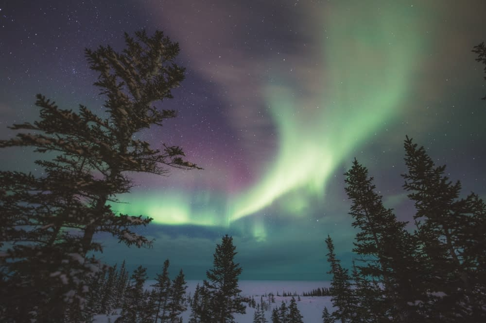

TRAVEL MANITOBA Experience Manitoba like never before!
Come Experience the beauty of the Northern Lights with us!!
Located at the Churchill Northern Studies Center in Churchill, Manitoba, this live cam is located directly underneath the aurora oval--one of the best places on earth to watch the aurora borealis, the spectacular atmospheric phenomenon better known as the Northern Lights.
When to See the Northern Lights?
While peak viewing times for the aurora borealis are between January and March across Manitoba, the lights are visible for up to 300 nights of the year in Manitoba's northern region.
Book an overnight adventure tour that offers sky-gazing access from the deck of a heated tundra vehicle, take in the show from the comfort of a cozy aurora dome or watch from the covered viewing lounge and open-air deck of the Churchill Northern Studies Centre.
So...What are you waiting for?
<
Fig.Northern Lights at Manitoba